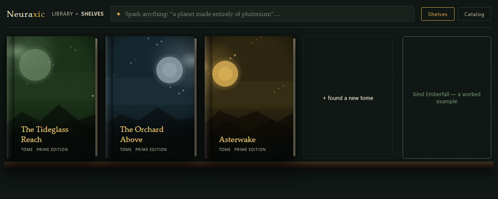

The shelf gathers unfinished worlds
The library makes a growing collection of worlds approachable. The chosen capture uses the existing flat, reduced-motion shelf and original procedural covers.
Neuraxic · Authoring & storyworld design
A character, a place, a line of dialogue or a rule can be the beginning of a story. Neuraxic explores a workspace where those ideas acquire context: prose, relationships, tentative claims and deliberate author decisions remain connected as the world develops.
Original interface · fictional content
Explore four views from the existing application: a shelf of worlds, a draft with suggested details, a neighborhood of relationships and a claim ledger. The new fictional setting, The Tideglass Reach, makes each view concrete without publishing private writing.

The library makes a growing collection of worlds approachable. The chosen capture uses the existing flat, reduced-motion shelf and original procedural covers.
Brine Lantern remains the focus when its facet changes. The draft, relationship map and claims offer different readings of the same subject.
The fictional exception keeps its open seal beside established claims. Seeing a possible detail does not silently make it part of the author’s accepted world.
These are unchanged React components from source revision f29176bf, rendered with new synthetic API responses. Local font fallbacks are used. The current cousin-copy and share controls remain placeholders. Inspect the interface study scope.
The chosen direction starts with an idea, rather than requiring the author to organize an entire project first. A “loose leaf” is an element that has not yet found its place. A “tome” groups a universe. The library gives that growing collection a home without requiring every fragment to arrive fully classified.
Opening something creates a focus: the living dossier of whatever the author is thinking about. Its prose, claims, neighborhood and possible depictions are different facets of the same subject. The author should be able to move between those views without losing which idea is under examination.
This is why the design does not make the manuscript and the map compete to be the product. Writing gives the world expression; relationships give a passage context. Both belong within the same authoring workspace.
The shelf presents tomes; the Catalog also includes unplaced elements. Source-rendered procedural covers provide a visual rhythm; they are placeholders, not generated depictions of the fictional world.
The selected subject anchors its dossier. Moving to prose, claims or the neighborhood changes the facet while preserving the thing the author is examining.
The neighborhood makes nearby relationships inspectable. Lenses change how those relationships are read; a graph alone cannot decide what belongs in the story.
A proposed claim remains visibly tentative. Accepting story truth is an author decision, with its own signal and record, rather than a side effect of something being displayed.
The interface study exercises read navigation with synthetic API responses. The separate continuity checks establish narrower backend behavior.
The original visual direction uses dark green study surfaces, parchment-toned text and warm gold accents. Its library, shelves and dossier language give an abstract collection of narrative facts a recognizable place to work.
The seals carry meaning: an open seal marks a proposal; a solid gold seal marks canon. Ember-colored findings call attention to concerns. Those states are intended to keep the author’s accepted world distinguishable from material still under consideration.
This treatment comes from the project’s retained design direction and current interface components. It is preserved here, alongside their source-defined procedural cover art, rather than replaced with a new portfolio-only interface.
The wider design separates three things that fiction often holds in tension: what is true in the world, which events a story chooses to present, and what its characters or audience believe. A character can be mistaken while the author privately knows the answer.
Author truth, testimony, belief, proposals and open questions need distinct meanings. A witness’s account should not automatically become a world fact.
When something happens in the fiction differs from when the author records or revises it. Alternate continuity starts from an explicit baseline.
A broken rule might invite an exception, illusion, deeper rule, mystery, revision or alternative. The author decides which interpretation serves the story.
A medium-neutral story spine is intended to reference world truths, supporting adaptations without casually duplicating or changing their meaning.
These are documented product ambitions. The navigation above demonstrates a narrower interface slice; the continuity tests below establish specific backend rules. Neither establishes a complete detection, adaptation or story-generation workflow.
The authoring interface makes the idea visible; these separate backend checks examine one part of its truth model. Imagine a wholly fictional place, Bellweather Reach. The first three steps explain a tested branch query using new story details. The last two explain separate tests of proposals and promotion. These are editable diagrams, not the application UI or a recorded authoring session.
Step 1 of 5
The main continuity contains a claim: the beacon is lit. A query at this point can return that claim.
“Visible” answers what belongs in this query. The claim can still be a proposal; appearing in the result does not make it canon.
The author creates an alternate continuity. Neuraxic records where it branches from the parent’s history.
The branch can see parent claims up to that baseline. It does not need to treat every later parent edit as part of its own starting point.
A later parent claim says the causeway is closed. Query both continuities at that later record point.
The main view includes the new claim. The alternate still sees the earlier beacon claim, and excludes the parent’s post-fork causeway claim.
The later causeway claim is outside its parent baseline.
A separate test starts with a canon claim, then records a different value for the same subject and predicate in the same continuity.
In this fictional explanation, “the beacon is unlit” conflicts with an existing canon claim that it is lit. Neuraxic reports the conflict and keeps the new claim as a proposal. It neither rejects the idea nor silently changes canon.
For a selected proposal, an explicit promotion creates a canon receipt that records the actor. Repeating that promotion with the same key returns the same receipt.
The retry test also commits the first transaction and opens a new session before trying again. The receipt still identifies the same action.
A claim the operator chooses to promote
Visibility and approval remain separate. The branch example concerns parent claims. Shared-library content has separate tracking and banking rules, so a fork should not be described as freezing every source the project can see.
Five existing tests passed on 19 September 2026. Zero failures. Zero skips.
The selection ran real service and query functions against in-memory or isolated temporary SQLite databases. Network connections were disabled. No models, application services, private story material or generated prose were involved.
This selection does not establish PostgreSQL concurrency behavior, production authentication, deployment readiness, full application interactions, manuscript quality, or conflict resolution across every storyworld relationship.
The public diagrams use new fictional content to explain related test assertions. They are separate from the authentic interface captures and are not a replay of those fictional inputs through the application. Source, private world material and the full verification receipt remain private.